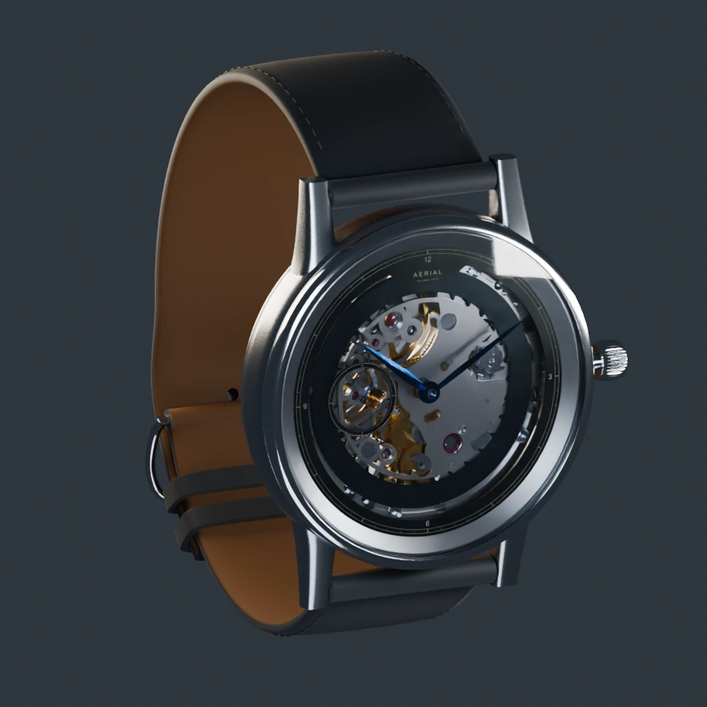
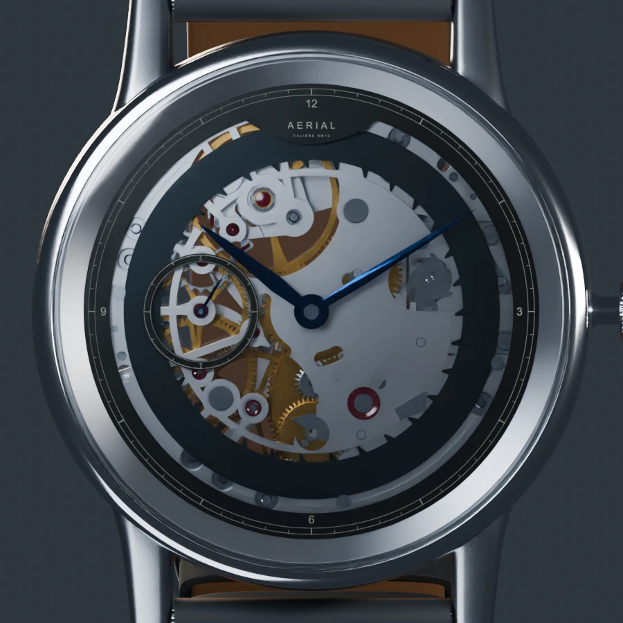
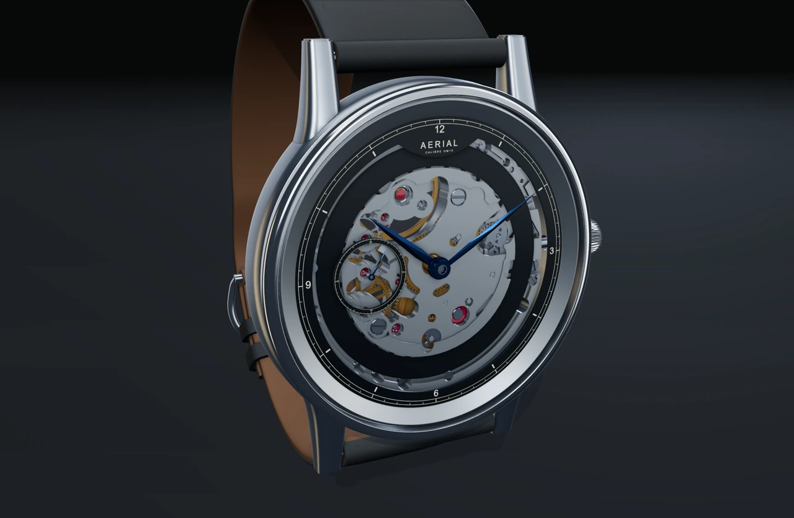
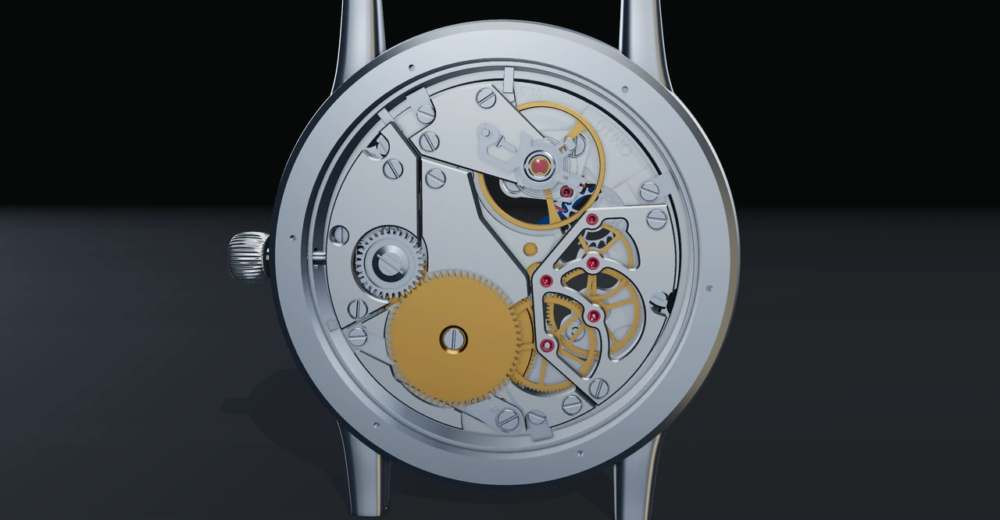
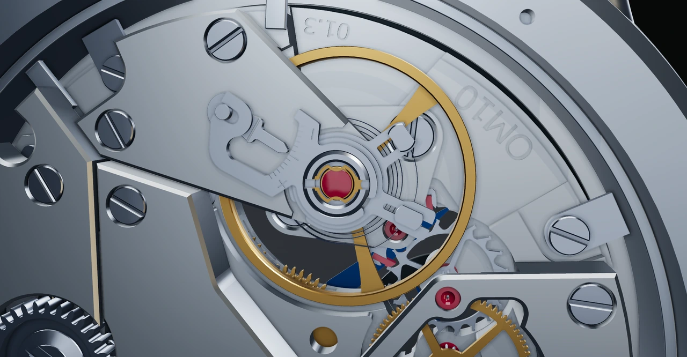
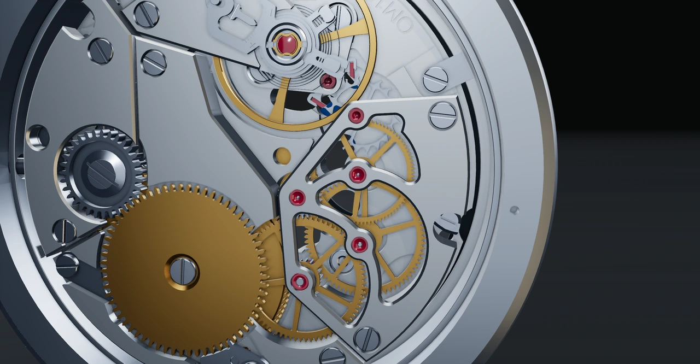
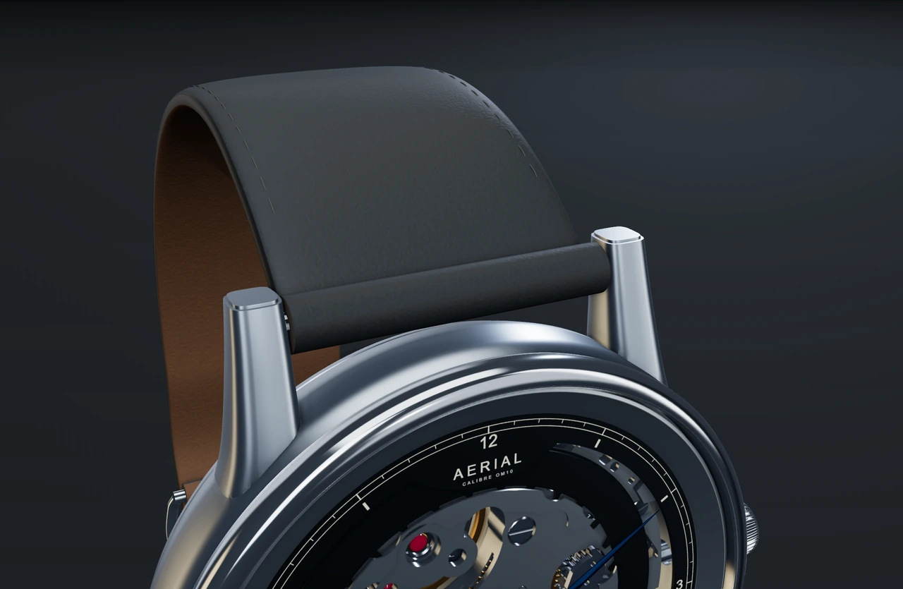

Space with a purpose.
A slender chapter frames the movement. An independent seconds ring leaves the centre open.
Preparing the watch studio…
Satin silver meets polished edges. Warm brass turns beneath a slender graphite chapter. Explore the character of each surface and the movement that gives it life.
A slender chapter frames the movement. An independent seconds ring leaves the centre open.
Directional satin, polished steel, warm brass and deep blue hands give each part its own character.
The measured gear train carries each impulse. Slow the movement down, or pause at any moment to look closer.


The open-work front is a separate design proposal. The R07 front uses five rounded gear openings, a raised plate rim and a blank calendar surface. Original calendar teeth and measured bearing seats are retained. The original 166-mesh OM10 and solid-dial assembly remain available with Open-work front switched off.
Materials and animation are visual studies. Structural loads, tolerances, sealing and manufacture still require validation.





The native renders preserve the earlier design study. The live captures show the current open-work front, hour and seconds markings, and revised leather at a repeatable rest pose.